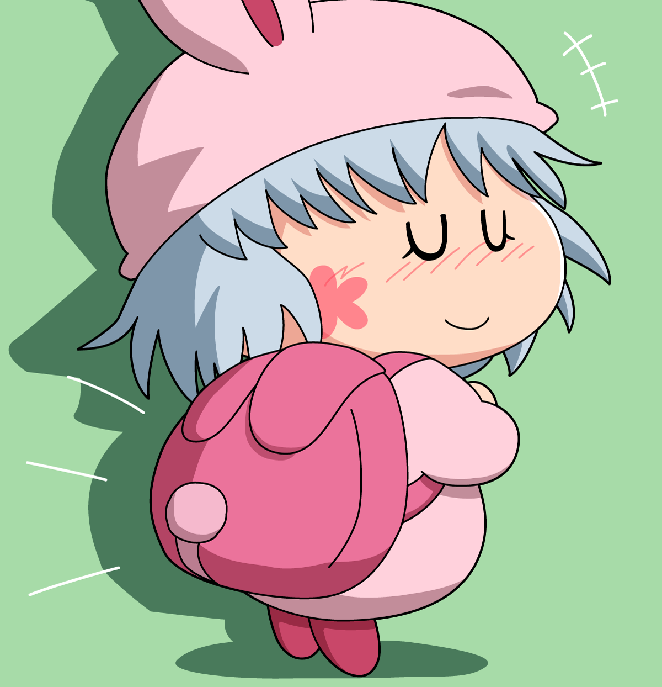

パピィ「ふふ〜ん。あたちのお気に入りのリュック、かわいいでちょ😆」
わがまま★フェアリー ミルモでポン！ ちゃあみんぐでパピィが背負っていたリュックを描いてみました。ウサギ型でしっぽもついてるかわいいリュック。製品化もできそうなレベルのデザインでしたね。
アニメではリュックから何かを取り出すシーンは確かなかったので、リュックの中に何が入っているのか気になりますね。おませな女の子なので、お化粧道具や手鏡（子供向けのおもちゃみたいなもの）は入っていそう。そしてムルモと一緒に写っている写真も中に入っていたりして！？
そんな秘密のリュック・・「パピィのお出かけおしゃれリュック」とかいう製品名でやはり発売してほしかったです〜(^◇^;)
(2022/6/19)